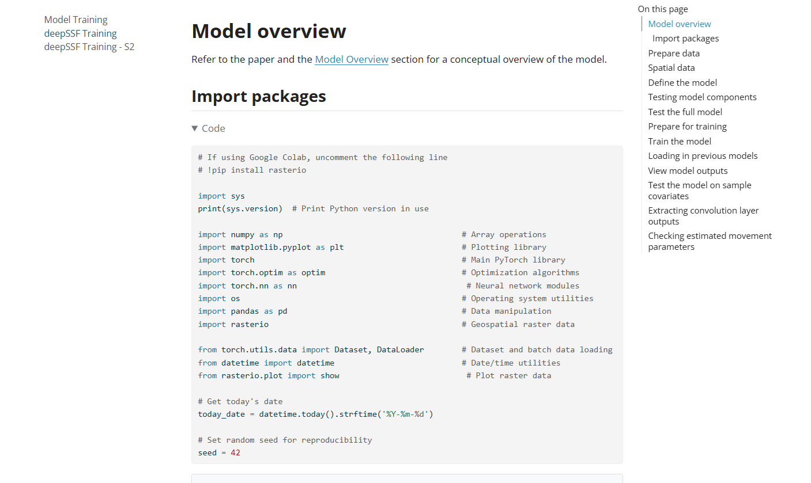
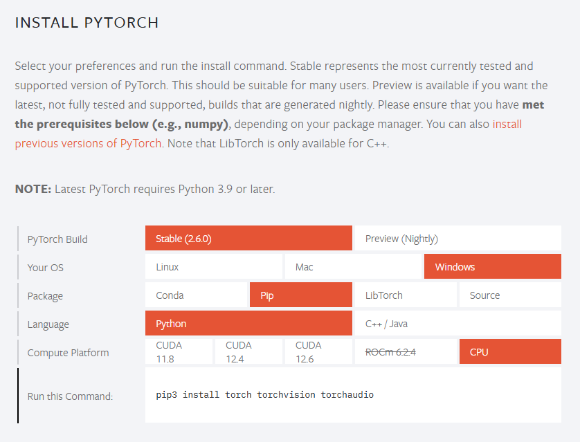
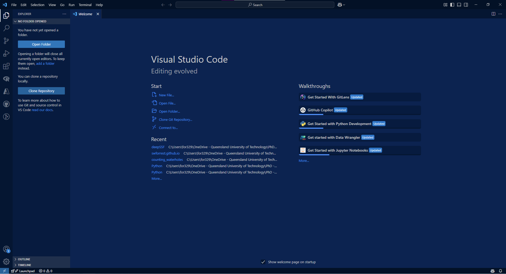

Setting up Python and using the deepSSF code
![]()
There are a number of approaches to installing Python and its associated libraries. Firstly there is the Python language to install, but you will also need package and environment management functionality. This allows you to create isolated working environments (which can then be different between projects to minimise version conflicts and many other headaches), and download the packages (typically called libraries in Python parlance).
For a minimal installation of Python and a package and environment manager I recommend Miniconda. I found the instructions here: https://eduand-alvarez.medium.com/setting-up-anaconda-on-your-windows-pc-6e39800c1afb to be very helpful, and I suggest following them closely (particularly with respect to adding conda to PATH), and if you are planning on using Jupyter Notebooks (which I used for the Python code in this project), then also complete (the second) Step 5: ‘Using ipykernel to add kernel from conda environment to jupyter’.
Once you have Python and Miniconda installed, you will likely want an interface (‘Integrated Development Environment’, an IDE) to code in (such as RStudio for R users). I use Visual Studio Code, or ‘VS Code’ as I find the functionality similar to RStudio (and as I have become familiar with VS Code I prefer it to RStudio in some ways).
If you have worked in R Markdown or Quarto notebooks in RStudio before, then I suggest using either Jupyter Notebooks (what I use) or Quarto documents in VS Code. Using these notebooks allow for chunks of code to be isolated and run, and the output to be displayed immediately below the code. To me this feels like a similar experience to working with R and RStudio, particularly if you already use R Markdown or Quarto documents - which I highly recommend for making your code and presentable and accessible!
Additional benefits of working with Jupyter Notebooks is that they can be rendered by Quarto into polished documents, such as we have on this website, and that they can be added directly to Google Colab for access to GPUs and other cloud computing resources.
On this website, all of the R code was written in Quarto documents and all of the Python code was written in Jupyter Notebooks, both of which have been rendered by Quarto.
Installing packages/libraries
You can install packages before you have downloaded and installed VS Code, which you can do through the terminal. When you have created a conda environment using the instructions for Miniconda above, activate that environment using conda activate <env>, and then use lines such as:
conda install -c conda-forge numpy
to install packages. This will install the NumPy package into the specific environment you have active.
The packages that we use are always shown at the top of the Python script when we import them, which looks something like:

Most of these packages can be installed with conda install -c conda-forge <package-name>, although some, such as PyTorch, give instructions which may provide a different installation call depending on your package manager, operating system and whether you have a GPU:

Creating a working directory and opening it with VS Code
When you have VS Code (or similar) up and running, create the folder that you want to work in (i.e. for saving scripts and saving plots etc). Or, if you don’t have a folder yet and want to use a GitHub repository, then I suggest creating a repository and ‘Cloning’ it to your local computer. This will provide you with a folder to work in, and you can push the files directly to GitHub (just make sure anything you don’t want pushed to GitHub is listed in the .gitignore file).
Note: this folder should be different to your conda environment! The conda environment is where Python and your packages are stored (which seems to work better when its close to your computer’s root directory), and the working directory is where you store you data, scripts and outputs, and may be linked to a GitHub repository. This working directory doesn’t need to close to the root of your computer, for instance I have mine in a OneDrive folder.

You can then also create an RStudio project (also recommended for working with R code) in this directory using the ‘New Project’ option in RStudio, and selecting ‘Existing Directory’ if you already have a GitHub repo, as RStudio will scan for a .git folder which will be present when you cloned the repo, or using the ‘Version Control’ option if you haven’t already cloned it using VS Code, as this does the same thing. Then you can have your .Rproj project file and all of you R and Python scripts in the same working directory.
Using the deepSSF code
When you have Python, a package and environment manager, an IDE, and a working directory to work in (possibly linked to a GitHub repository), you are ready to start coding in Python (I’m assuming you already have R and RStudio set up).
If you want to use the deepSSF code directly, then forking the repo on GitHub is probably the easiest option, as we haven’t turned this into a package (yet). This will create a linked copy of the repository in your own GitHub, which you can then clone onto your local computer, creating a working directory that you can work in which contains all of the code in the repo. This means that you’ll also have all of the code to create this website, which may not be relevant (but which may be helpful if you want to make your own at some point). For finding the scripts in the repo, all of the R coding scripts are in the root directory, and the Python scripts are in the Python/ directory.
An alternative is to download the scripts one-by-one from the repo, which means that you’ll have to create folders for keeping your data and for storing outputs, and then update the directories in the code based on those, but then you won’t be bothered by all of the other stuff in the repo.
You can also start from scratch with your own R scripts (e.g. using Quarto) and Jupyter Notebooks (or similar), and then just copy the code from the website or the downloaded scripts.
Good luck! And feel free to get in touch using the contact channels in the navbar or footer (preferably email).